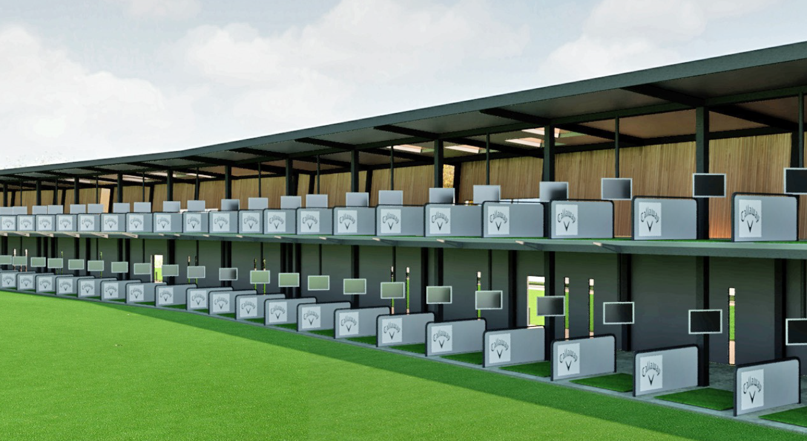
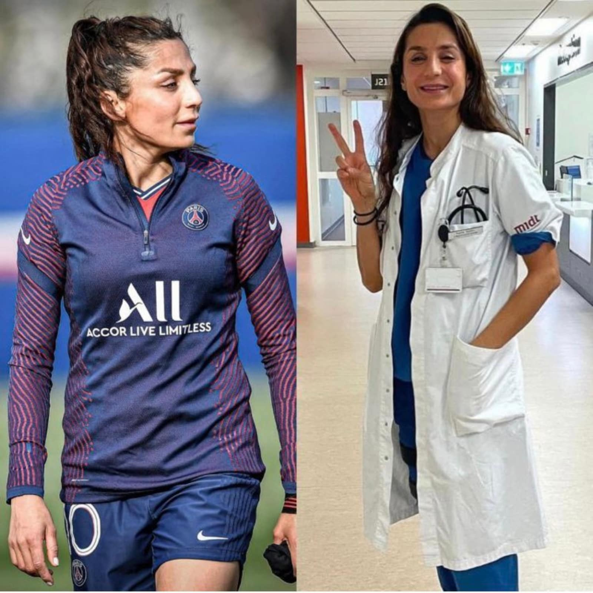
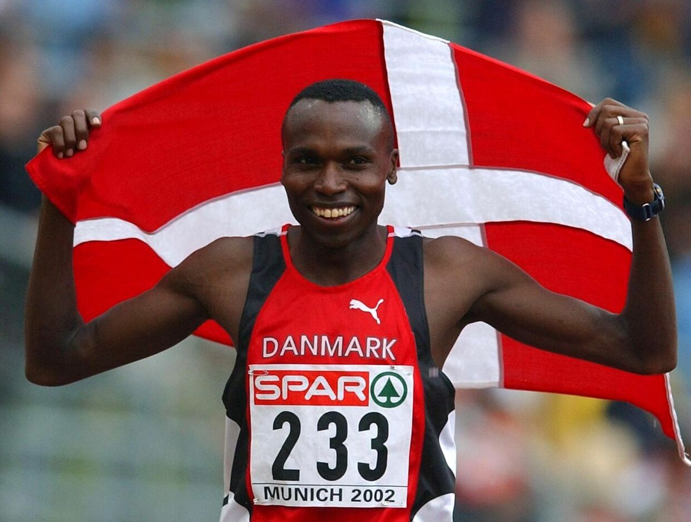

In collaboration with Smørum golf club and Ballerup municipality,
we would like to introduce diversity into the golf community.
We will do this on the basis that golf is better known as a “white middleman” sport.
If you go back in time, then golf was only intended for white people, and therefore it has had the effect that the majority of members are white people.
50 years later it has been made possible for everyone to participate, but the sport is still characterized by it. However,
there are still other challenges related, such as excessive costs and many minorities not having a front figure to represent them in the golf world,
which prevents them from creating a relationship.
We would like to change this so that it becomes more multicultural in order to spread the sport to other countries.
Denmark is a country with many minorities. So involving them in the world of golf,
can potentially change the image that golf is not just for white people but everyone.
Why is golf important? This is a good question. Golf has countless advantages and no disadvantages.
A study has been done that supports the idea that golf helps with depression and that several studies
show that golf is good for health. So why is it not known in other environments?
The majority of people are afraid to try something new, people are more likely
to say no and get out of their comfort zone than to participate
in something they do not know about. So how can it be propagated to the other environmentalists?
This can be done by implementing it in their schooling, since many minorities go to language school,
it can be part of their activity in collaboration with different organizations and workplaces,
and team building can be done which focuses on better integrating people with different backgrounds.
If you take football as an example, you can see a big change, as there are many different nationalities.
Over time, football has grown tremendously, which has created a more open environment.
The same must be introduced in the golf world.
Since golf is not as physically demanding and everyone has the opportunity to participate regardless of age,
it makes it a more attractive sport. And it still has the same health benefits as football.
Statistics show that people who play sports live longer and are more successful in the workplace than people who do not.
Collaboration

In 2021, smørum golf club opened a rehabilitation center in collaboration with the Danish Disability Association.
The same offer is made for people with different backgrounds. By implementing it in their language school or job center,
an extra boost can be given to them being able to participate in that event.
The offer requires volunteers to help the participants along the way.
Smørum Golfklub has been selected to cover a larger area, as the club is the largest of its kind in the region.
There are a number of people who feel both physically and psychologically unwell,
and they find it difficult to talk to other people about it. So one of our goals when working with doctors
and psychologists is to get those people out and make them strong so they can stand on their own two feet again.
The aim is to get the people who feel lonely, depressed, or indifferent due to lack of work to go out and play golf
and spend their time wisely.
There is a large body of research that shows that golf is a more rehabilitative sport than others.
It helps both balance and muscles", says Jens Bouet, director of the Danish Handicap Association.
The aim is, of course, to be able to retain existing golfers, and perhaps attract new ones after they have had an experience.
Members have also been encouraged to donate old golf equipment to the cause. It will also contain a number of social measures.
Nadia Nadim & Wilson Kipketer


One of our goals is to cooperate/have a partnership with Nadia Nadim, so she can come to the golf club
and give a speech about her upbringing as a smaller minority.
The reason for this is that Nadia Nadim comes from a very poor background, where she suffered a lot.
One of her sufferings is that her dad who was an Afghan National Army was executed by the Taliban and they,
therefore, had to flee to Denmark. Where she took up football. Even though she comes from such a suffering background,
she still grows up to become a successful football player and a doctor. In today's day and age,
Nadia Nadim is a big inspiration and a role model for women of the minority.
We also want to cooperate with Wilson Kipketer to come to the golf club and give a speech about his upbringing as a smaller minority.
Jobcenter / activation
One of our goals is cooperation with Ballerup municipality, especially regarding job centers and other forms of activation.
The centers are run by the danish municipalities, and their most important task for job centers in Denmark is to help the
unemployed find jobs and help companies find new employees. A lot of people that show up at job centers quite frankly hate the experience.
The environment can be quite depressing when you are required to show up at a place to do something you dislike.
Therefore our idea is to work with the centers and incorporate Smørum Golf Club as a free course for the
people of Ballerup that visit the job centers. Why do we think this is a good idea? First of all, it's a better,
more enjoyable environment where you get a chance to meet many different people outside in beautiful nature.
The vision is that Ballerup municipality will get people from different companies and corporations to be
at Smørum Golf Club so the people that come from the job centers see this as a form of networking.
We believe this will be a great opportunity for people looking for work to get a chance for
socializing and networking with people in the industry.
Perspective
If we look at other sports but the same case. We can see in football,
that the French national team is the most diversified team in Europe. It brings more inclusiveness to society and raises the level of the sport.
The French national team is a reflection of the French community, as to why every member of the community had a reason to celebrate.
For example, when France won the world cup in 2018.If a sport is non-inclusive and disregards big parts of society,
then it will eventually mean the potential peaks of where the sport could go, would unfortunately not be reached.
Conclusively will it mean golf would be a bigger sport with a wider audience if they advertised more diversity?
It would branch out to solve bigger issues within a society.